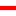

<!doctype html>
<html lang="en">
    <head>
        <meta charset="utf-8">
        <meta http-equiv="X-UA-Compatible" content="IE=edge">
        <meta name="viewport" content="initial-scale=1,user-scalable=no,maximum-scale=1,width=device-width">
        <meta name="mobile-web-app-capable" content="yes">
        <meta name="apple-mobile-web-app-capable" content="yes">
        <link rel="stylesheet" href="css/leaflet.css">
        <link rel="stylesheet" href="css/qgis2web.css"><link rel="stylesheet" href="css/fontawesome-all.min.css">
        <style>
        html, body, #map {
            width: 100%;
            height: 100%;
            padding: 0;
            margin: 0;
        }
        </style>
        <title></title>
    </head>
    <body>
        <div id="map">
        </div>
        <script src="js/qgis2web_expressions.js"></script>
        <script src="js/leaflet.js"></script>
        <script src="js/leaflet.rotatedMarker.js"></script>
        <script src="js/leaflet.pattern.js"></script>
        <script src="js/leaflet-hash.js"></script>
        <script src="js/Autolinker.min.js"></script>
        <script src="js/rbush.min.js"></script>
        <script src="js/labelgun.min.js"></script>
        <script src="js/labels.js"></script>
        <script src="data/ProposedRightofWay_4.js"></script>
        <script src="data/ExistingRightofWay_5.js"></script>
        <script>
        var map = L.map('map', {
            zoomControl:true, maxZoom:28, minZoom:1
        }).fitBounds([[30.28718441597735,-97.72592789334068],[30.29113837513399,-97.71978908389693]]);
        var hash = new L.Hash(map);
        map.attributionControl.setPrefix('<a href="https://github.com/tomchadwin/qgis2web" target="_blank">qgis2web</a> &middot; <a href="https://leafletjs.com" title="A JS library for interactive maps">Leaflet</a> &middot; <a href="https://qgis.org">QGIS</a>');
        var autolinker = new Autolinker({truncate: {length: 30, location: 'smart'}});
        var bounds_group = new L.featureGroup([]);
        function setBounds() {
        }
        map.createPane('pane_BaseMapOpenStreetMap_0');
        map.getPane('pane_BaseMapOpenStreetMap_0').style.zIndex = 400;
        var layer_BaseMapOpenStreetMap_0 = L.tileLayer('http://tile.openstreetmap.org/{z}/{x}/{y}.png', {
            pane: 'pane_BaseMapOpenStreetMap_0',
            opacity: 1.0,
            attribution: '<a href="https://www.openstreetmap.org/copyright">© OpenStreetMap contributors, CC-BY-SA</a>',
            minZoom: 1,
            maxZoom: 28,
            minNativeZoom: 0,
            maxNativeZoom: 19
        });
        layer_BaseMapOpenStreetMap_0;
        map.addLayer(layer_BaseMapOpenStreetMap_0);
        map.createPane('pane_BaseMapGoogleRoad_1');
        map.getPane('pane_BaseMapGoogleRoad_1').style.zIndex = 401;
        var layer_BaseMapGoogleRoad_1 = L.tileLayer('https://mt1.google.com/vt/lyrs=m&x={x}&y={y}&z={z}', {
            pane: 'pane_BaseMapGoogleRoad_1',
            opacity: 1.0,
            attribution: '<a href="https://www.google.at/permissions/geoguidelines/attr-guide.html">Map data ©2015 Google</a>',
            minZoom: 1,
            maxZoom: 28,
            minNativeZoom: 0,
            maxNativeZoom: 20
        });
        layer_BaseMapGoogleRoad_1;
        map.createPane('pane_BaseMapGoogleHybrid_2');
        map.getPane('pane_BaseMapGoogleHybrid_2').style.zIndex = 402;
        var layer_BaseMapGoogleHybrid_2 = L.tileLayer('https://mt1.google.com/vt/lyrs=y&x={x}&y={y}&z={z}', {
            pane: 'pane_BaseMapGoogleHybrid_2',
            opacity: 1.0,
            attribution: '<a href="https://www.google.at/permissions/geoguidelines/attr-guide.html">Map data ©2015 Google</a>',
            minZoom: 1,
            maxZoom: 28,
            minNativeZoom: 0,
            maxNativeZoom: 20
        });
        layer_BaseMapGoogleHybrid_2;
        map.createPane('pane_BaseMapCARTO_3');
        map.getPane('pane_BaseMapCARTO_3').style.zIndex = 403;
        var layer_BaseMapCARTO_3 = L.tileLayer('http://a.basemaps.cartocdn.com/light_all/{z}/{x}/{y}@2x.png', {
            pane: 'pane_BaseMapCARTO_3',
            opacity: 1.0,
            attribution: '<a href="https://cartodb.com/basemaps/">Map tiles by CartoDB, under CC BY 3.0. Data by OpenStreetMap, under ODbL.</a>',
            minZoom: 1,
            maxZoom: 28,
            minNativeZoom: 0,
            maxNativeZoom: 20
        });
        layer_BaseMapCARTO_3;
        function pop_ProposedRightofWay_4(feature, layer) {
            var popupContent = '<table>\
                    <tr>\
                        <td colspan="2">' + (feature.properties['Name'] !== null ? autolinker.link(feature.properties['Name'].toLocaleString()) : '') + '</td>\
                    </tr>\
                    <tr>\
                        <td colspan="2">' + (feature.properties['descriptio'] !== null ? autolinker.link(feature.properties['descriptio'].toLocaleString()) : '') + '</td>\
                    </tr>\
                    <tr>\
                        <td colspan="2">' + (feature.properties['timestamp'] !== null ? autolinker.link(feature.properties['timestamp'].toLocaleString()) : '') + '</td>\
                    </tr>\
                    <tr>\
                        <td colspan="2">' + (feature.properties['begin'] !== null ? autolinker.link(feature.properties['begin'].toLocaleString()) : '') + '</td>\
                    </tr>\
                    <tr>\
                        <td colspan="2">' + (feature.properties['end'] !== null ? autolinker.link(feature.properties['end'].toLocaleString()) : '') + '</td>\
                    </tr>\
                    <tr>\
                        <td colspan="2">' + (feature.properties['altitudeMo'] !== null ? autolinker.link(feature.properties['altitudeMo'].toLocaleString()) : '') + '</td>\
                    </tr>\
                    <tr>\
                        <td colspan="2">' + (feature.properties['tessellate'] !== null ? autolinker.link(feature.properties['tessellate'].toLocaleString()) : '') + '</td>\
                    </tr>\
                    <tr>\
                        <td colspan="2">' + (feature.properties['extrude'] !== null ? autolinker.link(feature.properties['extrude'].toLocaleString()) : '') + '</td>\
                    </tr>\
                    <tr>\
                        <td colspan="2">' + (feature.properties['visibility'] !== null ? autolinker.link(feature.properties['visibility'].toLocaleString()) : '') + '</td>\
                    </tr>\
                    <tr>\
                        <td colspan="2">' + (feature.properties['drawOrder'] !== null ? autolinker.link(feature.properties['drawOrder'].toLocaleString()) : '') + '</td>\
                    </tr>\
                    <tr>\
                        <td colspan="2">' + (feature.properties['icon'] !== null ? autolinker.link(feature.properties['icon'].toLocaleString()) : '') + '</td>\
                    </tr>\
                </table>';
            layer.bindPopup(popupContent, {maxHeight: 400});
        }

        function style_ProposedRightofWay_4_0() {
            return {
                pane: 'pane_ProposedRightofWay_4',
                opacity: 1,
                color: 'rgba(255,0,0,1.0)',
                dashArray: '',
                lineCap: 'square',
                lineJoin: 'bevel',
                weight: 3.0,
                fillOpacity: 0,
                interactive: false,
            }
        }
        map.createPane('pane_ProposedRightofWay_4');
        map.getPane('pane_ProposedRightofWay_4').style.zIndex = 404;
        map.getPane('pane_ProposedRightofWay_4').style['mix-blend-mode'] = 'normal';
        var layer_ProposedRightofWay_4 = new L.geoJson(json_ProposedRightofWay_4, {
            attribution: '',
            interactive: false,
            dataVar: 'json_ProposedRightofWay_4',
            layerName: 'layer_ProposedRightofWay_4',
            pane: 'pane_ProposedRightofWay_4',
            onEachFeature: pop_ProposedRightofWay_4,
            style: style_ProposedRightofWay_4_0,
        });
        bounds_group.addLayer(layer_ProposedRightofWay_4);
        map.addLayer(layer_ProposedRightofWay_4);
        function pop_ExistingRightofWay_5(feature, layer) {
            var popupContent = '<table>\
                    <tr>\
                        <td colspan="2">' + (feature.properties['Name'] !== null ? autolinker.link(feature.properties['Name'].toLocaleString()) : '') + '</td>\
                    </tr>\
                    <tr>\
                        <td colspan="2">' + (feature.properties['descriptio'] !== null ? autolinker.link(feature.properties['descriptio'].toLocaleString()) : '') + '</td>\
                    </tr>\
                    <tr>\
                        <td colspan="2">' + (feature.properties['timestamp'] !== null ? autolinker.link(feature.properties['timestamp'].toLocaleString()) : '') + '</td>\
                    </tr>\
                    <tr>\
                        <td colspan="2">' + (feature.properties['begin'] !== null ? autolinker.link(feature.properties['begin'].toLocaleString()) : '') + '</td>\
                    </tr>\
                    <tr>\
                        <td colspan="2">' + (feature.properties['end'] !== null ? autolinker.link(feature.properties['end'].toLocaleString()) : '') + '</td>\
                    </tr>\
                    <tr>\
                        <td colspan="2">' + (feature.properties['altitudeMo'] !== null ? autolinker.link(feature.properties['altitudeMo'].toLocaleString()) : '') + '</td>\
                    </tr>\
                    <tr>\
                        <td colspan="2">' + (feature.properties['tessellate'] !== null ? autolinker.link(feature.properties['tessellate'].toLocaleString()) : '') + '</td>\
                    </tr>\
                    <tr>\
                        <td colspan="2">' + (feature.properties['extrude'] !== null ? autolinker.link(feature.properties['extrude'].toLocaleString()) : '') + '</td>\
                    </tr>\
                    <tr>\
                        <td colspan="2">' + (feature.properties['visibility'] !== null ? autolinker.link(feature.properties['visibility'].toLocaleString()) : '') + '</td>\
                    </tr>\
                    <tr>\
                        <td colspan="2">' + (feature.properties['drawOrder'] !== null ? autolinker.link(feature.properties['drawOrder'].toLocaleString()) : '') + '</td>\
                    </tr>\
                    <tr>\
                        <td colspan="2">' + (feature.properties['icon'] !== null ? autolinker.link(feature.properties['icon'].toLocaleString()) : '') + '</td>\
                    </tr>\
                </table>';
            layer.bindPopup(popupContent, {maxHeight: 400});
        }

        function style_ExistingRightofWay_5_0() {
            return {
                pane: 'pane_ExistingRightofWay_5',
                opacity: 1,
                color: 'rgba(98,192,250,1.0)',
                dashArray: '',
                lineCap: 'square',
                lineJoin: 'bevel',
                weight: 3.0,
                fillOpacity: 0,
                interactive: false,
            }
        }
        map.createPane('pane_ExistingRightofWay_5');
        map.getPane('pane_ExistingRightofWay_5').style.zIndex = 405;
        map.getPane('pane_ExistingRightofWay_5').style['mix-blend-mode'] = 'normal';
        var layer_ExistingRightofWay_5 = new L.geoJson(json_ExistingRightofWay_5, {
            attribution: '',
            interactive: false,
            dataVar: 'json_ExistingRightofWay_5',
            layerName: 'layer_ExistingRightofWay_5',
            pane: 'pane_ExistingRightofWay_5',
            onEachFeature: pop_ExistingRightofWay_5,
            style: style_ExistingRightofWay_5_0,
        });
        bounds_group.addLayer(layer_ExistingRightofWay_5);
        map.addLayer(layer_ExistingRightofWay_5);
        var baseMaps = {};
        L.control.layers(baseMaps,{' Existing Right-of-Way': layer_ExistingRightofWay_5,' Proposed Right-of-Way': layer_ProposedRightofWay_4,"Base Map (CARTO)": layer_BaseMapCARTO_3,"Base Map (Google Hybrid)": layer_BaseMapGoogleHybrid_2,"Base Map (Google Road)": layer_BaseMapGoogleRoad_1,"Base Map (OpenStreetMap)": layer_BaseMapOpenStreetMap_0,},{collapsed:false}).addTo(map);
        setBounds();
        </script>
    </body>
</html>
